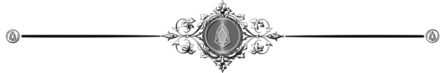

The Startup States of America
Your vote might count, but your voice is being algorithmized out of existence. We're not seeing democratic backsliding—we're witnessing startup methodology applied to governance itself, replacing democratic coordination with corporate management systems.


According to Shoshana Zuboff:
"In the startup world, 'move fast and break things' is a methodology. In governance, it's a catastrophe disguised as innovation."

This week's essay builds upon my recent exploration of, The Last Human Standing and How We Learned to Stop Thinking. While examining those ideas, I uncovered a deeper pattern that extends beyond individual cognition. What became unmistakable was how the world's tech elite are systematically applying their startup methodologies to governance itself, transferring the same algorithms that built their empires to restructure our democratic institutions. The pattern is both deliberate and recognizable once you understand the blueprint. I've broken it down to make this transformation visible to all.
The notification arrived without warning: "Your access to municipal services requires identity verification update." What seemed like routine digital bureaucracy was actually the quiet implementation of a new algorithmic scoring system that would determine your access to everything from water utilities to parking permits. No public debate preceded it. No elected official campaigned on it. The system simply appeared, deployed by a private contractor through administrative channels designed to bypass democratic oversight.
This isn't a dystopian scenario; it's happening in municipalities across America right now.
America is being systematically reengineered using venture capital methodology—and most observers are completely missing the mechanism.
How Tech Logic Is Dismantling Democracy

When the United States was founded, governance moved at the speed of horseback messengers and printed broadsides. Democratic processes were designed for deliberation measured in weeks and months, not milliseconds. Today's technological acceleration hasn't merely changed communication tools; it's creating an entirely different operating system for society itself.
Political analysts continue to frame our current transformation through conventional lenses: partisan conflict, democratic backsliding, authoritarian emergence. This analysis completely misses what's actually destroying our capacity for self-governance. What we're witnessing is far more methodical and dangerous, it is the systematic application of startup methodology to governance itself.
The evidence is hiding in plain sight, yet virtually no one recognizes the pattern because they're looking for political motivations rather than engineering logic. We're not experiencing chaotic disruption; we're observing the deliberate implementation of a five-step algorithmic process designed to replace democratic coordination with corporate management systems.
This transformation isn't confined to a single political ideology or party. It transcends traditional partisan divides, appearing in both red states and blue cities, anywhere efficiency metrics can be presented as superior to democratic deliberation. The common denominator isn't political affiliation but methodological approach: the application of engineering solutions to human coordination problems.
The Algorithm of Power
The transformation follows a precise methodology that most observers fail to recognize:
Step 1: Requirements Analysis and Delegitimization.
First, systematically demonstrate that existing democratic "requirements" are fundamentally broken.
Elections become "rigged theater." Congressional processes become "performative inefficiency." Public discourse becomes "manipulated chaos." Consider the transformation of Twitter/X: what began as a platform for democratic discourse now functions as an amplification system for delegitimizing democratic institutions. The platform's modification systematically altered how millions perceive institutional credibility, with algorithms designed to amplify institutional failure while minimizing institutional success.
Step 2: Process Deletion.
Once requirements are deemed obsolete, delete entire system components.

80%" Similarly, the Consumer Financial Protection Bureau saw its enforcement actions drop by 80% in the same period, not because financial…Suddenly, the regulatory agency you thought would protect you from contaminated water simply... doesn't exist anymore. The ethics office that might have investigated corruption gets "streamlined" out of existence. Regulatory oversight, ethics enforcement, institutional checks and balances aren't improved; they're eliminated as unnecessary friction. The Environmental Protection Agency offers a stark illustration: between 2017-2021, it lost nearly 1,000 scientists, expertise that wasn't replaced but deliberately eliminated as "regulatory burden." Similarly, the Consumer Financial Protection Bureau saw its enforcement actions drop by 80% in the same period, not because financial malfeasance decreased, but because the enforcement mechanism was functionally deleted. The DOGE initiative represents this phase perfectly: proving that vast portions of democratic infrastructure are expendable.
Step 3: Optimization of Remaining Components.
What survives gets streamlined into corporate-style decision-making structures.
Democratic deliberation is replaced with executive efficiency. Consensus-building is replaced with founder authority. Your elected representative becomes a middle manager implementing decisions made in private boardrooms. In cities across America, "data-driven governance" initiatives have replaced community input sessions with analytics dashboards. Denver's "Peak Performance" program reconfigured municipal services according to efficiency metrics rather than democratic input. Services performing "below target" faced elimination regardless of community value, with decisions justified through algorithmic assessment rather than public deliberation.
Step 4: Acceleration and Loop Tightening.
Decision-making cycles accelerate beyond democratic capacity for oversight.
Rapid policy implementation, emergency authorities, crisis-driven governance, and all are designed to move faster than institutional resistance can organize. By the time you understand what's happening to your community, the next phase is already being deployed. The COVID-19 emergency demonstrated this principle: necessary public health measures created precedents for emergency governance that bypassed traditional oversight. While initially justified by crisis, many of these accelerated decision-making processes never reverted to normal democratic timelines. Contact tracing apps, digital health passports, and emergency powers demonstrated how rapidly governance systems could transform when operating under acceleration logic.
Step 5: Automation and Lock-in.
The final phase embeds new logic into self-reinforcing technological systems.

AIArtificial IntelligenceIn the Lexicon →Algorithmic governance, AI-driven policy implementation, and automated decision-making presented as neutral efficiency improvements while actually cementing centralized control. Your human need for consideration, nuance, or appeal becomes a bug in the system to be eliminated. The Arkansas Department of Human Services provides a sobering example. In 2016, they implemented an algorithmic system to allocate home healthcare hours for disabled residents. When the algorithm reduced care hours, many recipients experienced drastic quality-of-life impacts. Human caseworkers who previously made these assessments could no longer override the system. When challenged in court, officials couldn't even explain how the algorithm made its determinations. The architecture itself had transformed — the algorithm wasn't merely executing decisions but had become the fundamental decision framework, impervious to human oversight or modification.
TechnologyThe applied tools, systems, and infrastructure through which scientific knowledge is put to practical use.In the Lexicon →These five steps don't always proceed linearly—they often operate concurrently across different domains and jurisdictions. What remains consistent is the underlying logic: treat democratic processes as inefficient software to be debugged, rewritten, or deleted entirely.
The Venture Capital Governance Model
To understand this transformation's origins, we must examine the philosophical framework of Silicon Valley venture capital, a system that has created unprecedented wealth by treating every human activity as a potential optimization target.
Here's what makes this different from traditional authoritarianism: Traditional authoritarian systems still recognize humans as political subjects with rights to be violated or protected. The startup state treats humans as user data to be processed.
Rapid Iteration Over Stability. Startups "move fast and break things." Applied to governance, this means treating social systems as beta tests where human disruption is acceptable collateral damage for optimization. When Flint, Michigan's water system was reconfigured for "cost efficiency," residents became unwitting beta testers for a governance experiment. The resulting lead contamination crisis demonstrated how "move fast and break things" translates to human suffering when applied to essential services.
Winner-Take-All Market Dynamics. Successful startups capture entire market categories. Applied to governance, this creates monopolistic control over essential human services with no competitive alternatives. The privatization of public housing in cities like Chicago has created precisely this dynamic. When the Chicago Housing Authority demolished public housing and shifted to "mixed-income development" models managed by private companies, residents lost both housing stability and democratic input channels.
User Engagement Over User Welfare. Platforms optimize for attention and data generation, not user wellbeing. Applied to governance, this prioritizes behavioral modification over human flourishing. Your anger and anxiety become valuable data points, so the system is designed to generate more of both. Political communication has been entirely reconfigured by this principle. Campaign messaging increasingly targets emotional triggers rather than policy positions, not because politicians have become more manipulative, but because engagement-optimized media systems reward emotional triggering over substantive discussion.
Exit Strategy Mentality. Venture capitalists optimize for extraction and exit. Applied to governance, this means extracting maximum value from social systems while planning eventual escape to private enclaves. The proliferation of private city proposals, from charter cities to sovereign tech zones, represents this principle in action.
The Identity Privatization Crisis

While many transformations occur visibly through policy changes or platform implementations, the most consequential shift is happening invisibly: the privatization of human recognition itself.
The privatization of identity verification, authentication, and social credentialing through technological platforms.
When was the last time you proved who you were without involving a private company? Your bank account, your phone number, your social media profiles, your credit score—private companies now control the basic infrastructure of your legal existence.
This transformation appeared benign at first: convenient digital verification systems replacing cumbersome paper processes. But the cumulative effect transferred something profound, the very mechanism of official human recognition, from public institutions accountable to citizens to private platforms accountable to shareholders.
Consider how these systems quietly expanded:
- Digital identity verification began with narrow applications like online banking
- Platform expansion made these systems essential for basic economic participation
- Government services adopted private verification systems for "efficiency"
- Alternative verification methods gradually disappeared
- Essential services became accessible only through private identity systems
The state of Alabama provides a telling example. In 2019, they partnered with ID.me, a private identity verification company, to process unemployment claims. What began as an optional verification method quickly became mandatory. When the system mistakenly flagged legitimate claims as fraudulent, affected citizens discovered there was no functional human appeals process.
When access to housing, employment, healthcare, and social interaction depends on algorithmic scoring systems controlled by private entities, meaningful autonomy disappears. You become a data profile with attached biological hardware, not a citizen with inherent rights.
Whose Efficiency?

Defenders of these transformations often present compelling efficiency arguments. This creates an intellectually challenging situation: some aspects of technological governance genuinely improve specific functions.
Startup governance models might actually be more "efficient" at achieving certain metrics. Algorithmic decision-making eliminates bureaucratic friction. Private platform integration reduces administrative overhead. Data-driven policy implementation appears more responsive than democratic deliberation.
But efficiency toward what end? The optimization target fundamentally shifts from human flourishing to system performance metrics controlled by private entities.
Consider the efficiency gains in criminal justice algorithms. Systems like COMPAS (Correctional Offender Management Profiling for Alternative Sanctions) process cases faster than human judges and apply consistent criteria across cases. By efficiency metrics, they outperform traditional judicial processes. Yet research has repeatedly demonstrated these systems reproduce and amplify existing biases while operating within black-box algorithms that neither defendants nor judges can scrutinize.
Democracy feels slow and frustrating because it's designed to accommodate the full complexity of human needs and disagreements. Democratic systems are "inefficient" because they're designed to preserve space for human agency, dissent, and unpredictable choice. Startup governance eliminates these "inefficiencies" by designing human choice out of the system entirely.
The Philosophical Break
This represents a fundamental disagreement over what humans are for. Democratic systems assume humans have inherent dignity that constrains how they can be organized. Startup governance assumes humans are computational resources to be optimized.
The philosophical difference becomes viscerally apparent when systems confront edge cases. In July 2022, a pregnant woman in Texas was denied medical intervention for a non-viable pregnancy because automated compliance systems couldn't determine if her condition qualified under new abortion restrictions. The hospital's algorithmic decision-support system flagged the case as potentially illegal, and no human authority could override it. Her health deteriorated for days while the system processed her case according to its parameters, not according to her immediate human need.
The Exit Strategy Reality

The most damning evidence lies in how Silicon Valley elites actually behave: They're building private bunkers, buying citizenship in multiple countries, and creating autonomous zones. They're not planning to live in the systems they're creating.
The evidence is clear: Peter Thiel's New Zealand estate, Sam Altman's collapse preparations, and Reid Hoffman's self-described "apocalypse insurance" reveal a profound contradiction: the architects of our technological future are actively hedging against the very systems they're creating.
They're treating governance transformation as a business opportunity with a built-in exit strategy. The logical endpoint is societal strip-mining: extract maximum value from human coordination systems, then exit to private jurisdictions when the systems collapse.
Alternative Technological Futures
Alternative technological futures exist. Estonia's publicly-controlled digital identity system demonstrates democratic accountability alongside efficiency. Platform cooperatives like Driver's Cooperative (Uber alternative) distribute governance among users rather than centralizing it with investors. Digital commons projects like Wikipedia prove complex systems can operate through collaborative governance rather than extraction.
These alternatives reveal that technology itself isn't inherently anti-democratic. Rather, specific implementation models, particularly those driven by venture capital imperatives, create anti-democratic outcomes.
The Critical Questions We're Avoiding
The fundamental questions at stake:
- What happens to human agency when coordination mechanisms are privately owned and optimization targets are defined by corporate interests?
- What recourse exists when algorithmic systems controlling essential services operate as "black boxes" with no appeal process?
Consider this: When facial recognition systems misidentify you with no appeal process, how do you reclaim your identity? When proprietary algorithms systematically exclude your demographic from housing or employment, how do you prove discrimination? When community resources are allocated by engagement metrics rather than human needs, what happens to essential but "unpopular" services?
The real first principles question: Is a perfectly efficient system that eliminates human agency preferable to a chaotic system that preserves human dignity?
Answering these questions requires more than philosophical debate, it demands practical action before automated governance systems become immutable reality.
Reclaiming Our Technological Futures
While the transformation appears overwhelming, lock-in isn't yet complete. Meaningful intervention remains possible at multiple levels:
Individual Responses:
- Develop technological literacy beyond mere usage skills
- Practice conscious technology consumption and data hygiene
- Support alternative technological models through direct participation
- Recognize and resist algorithmic manipulation tactics
- Document technological governance failures in your community
Collective Strategies:
- Create local technological sovereignty initiatives
- Develop mutual aid networks that operate outside platform intermediaries
- Build community-owned digital infrastructure
- Form algorithmic impact assessment groups
- Establish digital rights organizations focused on governance implications
Institutional Approaches:
- Develop technological oversight bodies with genuine enforcement authority
- Implement algorithmic transparency requirements
- Assert public ownership of essential digital infrastructure
- Require human appeal processes for all automated decisions
- Protect democracy-enhancing technologies while regulating extractive ones
Technological literacy, community-owned infrastructure, mutual aid networks, and algorithmic impact assessments provide starting points. At institutional levels, we need genuine oversight bodies, transparency requirements, and guaranteed human appeals processes for automated decisions.
The path forward requires neither blind technophobia nor uncritical techno-optimism, but rather a sophisticated understanding of how technological architectures encode power relationships.
We're not witnessing political chaos, we're observing methodical system replacement. The question isn't whether this is happening, but whether democratic institutions can recognize and respond to systematic engineering approaches to power consolidation.
The venture capital governance transformation presents itself as inevitable technological progress. It is not. It represents just one possible relationship between technology and human coordination, one that prioritizes specific values (efficiency, scale, extraction) over others (agency, dignity, self-determination).
The fundamental choice isn't between embracing or rejecting technological transformation. It's between competing visions of what that transformation should optimize for: human flourishing or system performance metrics.
The time for making that choice is rapidly closing.
The algorithm is already running. The question is whether we understand what it's optimizing for, and whether we're willing to pull the emergency brake before the automation phase locks in permanently.

🌶️ Courtesy of your friendly neighborhood, Khayyam
Don't miss the weekly roundup of articles and videos from the week in the form of these Pearls of Wisdom. Click to listen in and learn about tomorrow, today.


Sign up now to read the post and get access to the full library of posts for subscribers only.
 🌶️ iamkhayyam
🌶️ iamkhayyamKhayyam Wakil is a researcher in human cognition, technological transformation, and systems of intelligence. His work examines the intersection of artificial intelligence, human agency, and the future of conscious choice in an increasingly automated world.